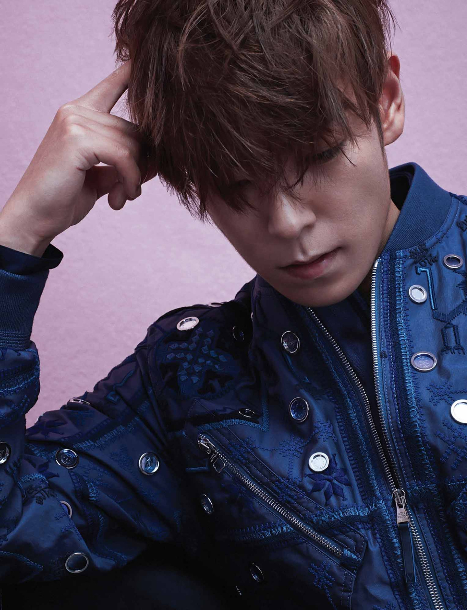

TOP
Choi Seung-hyun (Hangul: 최승현; born November 4, 1987), better known by his stage name T.O.P, is a South Korean rapper, singer-songwriter and actor. He is a member of the South Korean boy band Big Bang and has also participated in various dramas and films, such as I Am Sam (2007), Iris (2009), Nineteen (2009), 71: Into the Fire (2010), Commitment (2013) and Tazza: The Hidden Card (2014).
Jeff Benjamin of Billboard K-Town columnist noted that T.O.P is well known for his low-bass timbre rapping.
